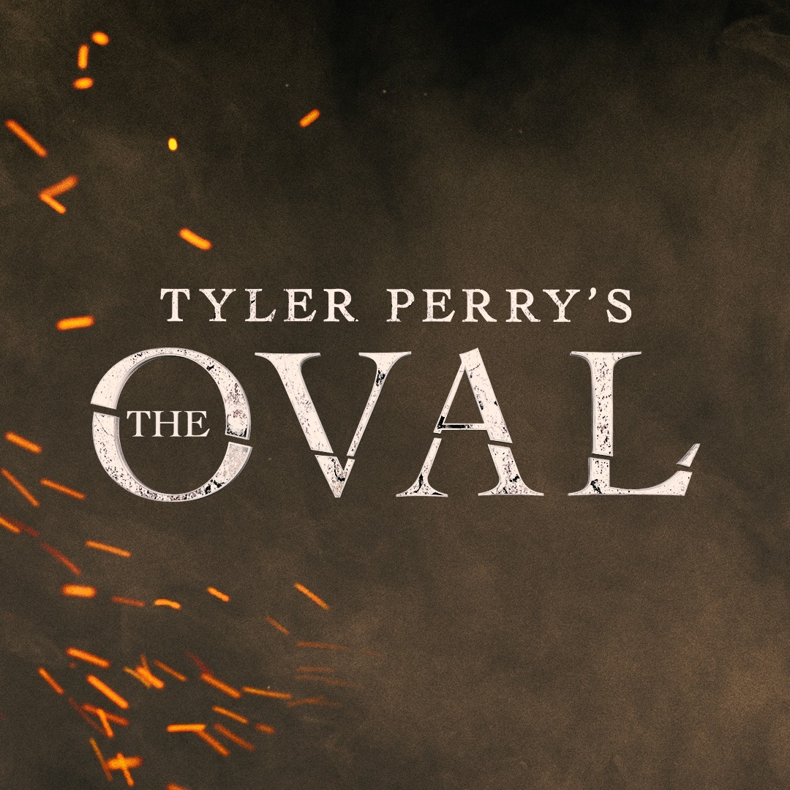
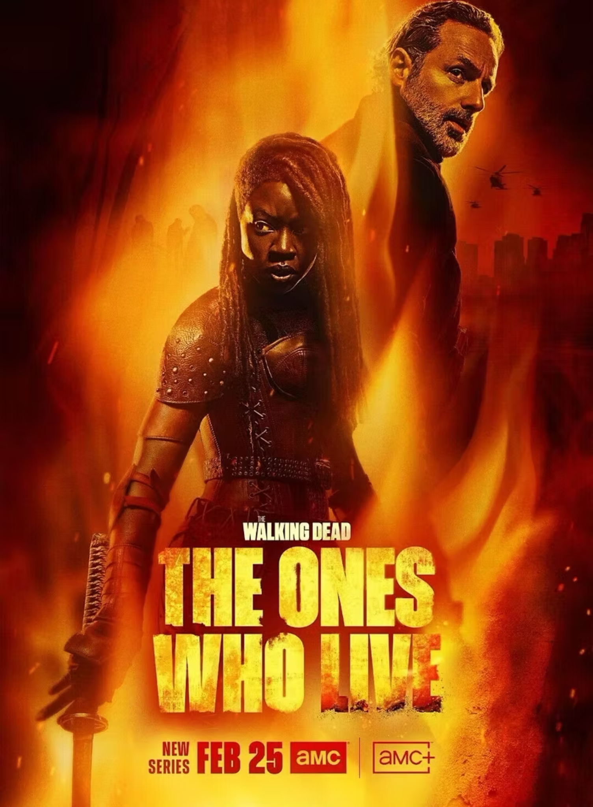

A New Milestone! Tyler Perry's
The Oval: Season 7
3 Wines Music provided the original score for The Oval Season 7, now streaming on Paramount+, with Lance Treviño serving as lead composer. This project marks a major step forward for our team and reflects our continued growth in character-driven scoring.
The production required a fast-paced delivery schedule, including multiple three-episode weeks. Our team delivered across composition, editorial, and mix, maintaining consistency and narrative cohesion at scale. With a fresh musical direction, we developed new thematic identities for all of season 7. We look forward to sharing more about the scoring approach in the coming weeks
We’re grateful to the team at TPS for their trust and collaboration.

The musical journey of
The Walking Dead: The Ones Who Live
Composing on the score for The Walking Dead franchise has been one of the most rewarding and fascinating experiences of Lance's career.
This latest chapter in the iconic franchise presented a chance to explore the emotional and psychological landscape of the characters through a richer and more expansive sonic world.
Under the leadership of Sam Ewing, the music team pushed the series toward an especially cinematic finish, culminating in a full orchestral session on the final episode.
